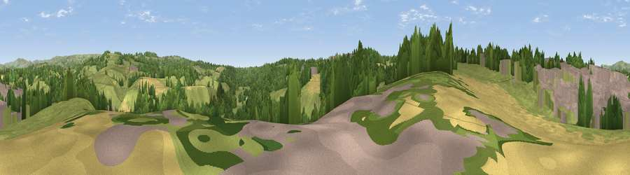

Viewpoint near Cheddleton
#30281 in England · top 55% of its area beats it · near CheddletonWhere it is
The exact computed spot (SJ 97825 51625). Click the marker for map links.
The view, rendered

A 360° render of this exact spot computed from the terrain model, tree cover and land cover — summer colours, afternoon light, calibrated against photographs of famous viewpoints. Real trees, hedges and buildings will differ in detail.
The panorama
Grey silhouette: terrain skyline in each direction (720 bearings, Earth curvature and refraction included). Dashed green: skyline with trees (+15 m) and buildings (+8 m) as obstacles. Blue strip: how far the ground is visible on each bearing.
Where the view opens
Wedge length = distance to the farthest visible ground on that bearing (vegetation-aware). Rings at 10, 25 and 50 km.
What fills the view
48% grassland · 30% woodland · 11% built-up · 10% cropland
Angular shares of the visible panorama (visual magnitude), not map area. Landscape diversity 0.53 (0–1 Shannon).
Key numbers
More beautiful places nearby
The staircase of upgrades: each row has a higher view potential than everything closer. Driving times are estimates from straight-line distance, calibrated against real road routing — check an actual route before setting out.
| Place | Direction | Drive | Score |
|---|---|---|---|
| Viewpoint near Ipstones | E · 4 km | ~9 min | 52.0 |
| Viewpoint near Bagnall | WSW · 6 km | ~13 min | 57.0 |
| Viewpoint near Bradnop | NE · 6 km | ~13 min | 65.2 |
| Viewpoint near Bradnop | NE · 7 km | ~14 min | 65.3 |
| Viewpoint near Thorncliffe | NNE · 9 km | ~18 min | 66.5 |
| Viewpoint near Meerbrook | NNE · 11 km | ~22 min | 72.1 |
| Viewpoint near Meerbrook | N · 12 km | ~22 min | 73.2 |
| Viewpoint near Meerbrook | N · 12 km | ~23 min | 73.5 |
53.06187, -2.03391 · source: screening · position refined by local search. Computed location — check access rights before visiting.